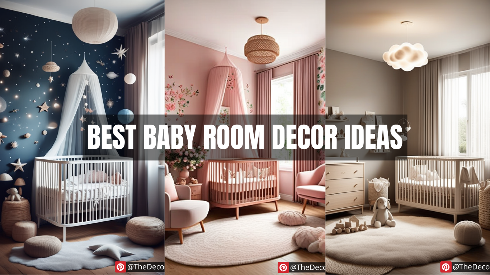

Ultimate Guide to Baby Room Decor: Tips for a Stylish and Functional Nursery
Designing a nursery is an exciting journey for parents-to-be. It’s not just about aesthetics; a well-thought-out baby room decor enhances comfort, functionality, and safety. Whether you are going for a modern, minimalist, or whimsical theme, this guide will help you create the perfect space for your little one.
Choosing a Theme for Baby Room Decor
Selecting a theme sets the foundation for the nursery’s design. Some popular baby room decor themes include:
Neutral Elegance – Soft grays, beiges, and whites create a timeless look.
Nature-Inspired – Earthy tones, floral patterns, and wooden furniture bring the outdoors inside.
Fantasy and Fairytale – Incorporate dreamy clouds, stars, and storybook characters.
Modern Minimalism – Clean lines, simple furniture, and a clutter-free environment.
Essential Furniture for a Baby’s Room
When planning your baby room decor, focus on functional and comfortable furniture. The must-have pieces include:
Crib – Ensure it meets safety standards and includes a comfortable mattress.
Changing Table – Choose one with ample storage for diapers and baby essentials.
Rocking Chair or Glider – Perfect for feeding and soothing your baby.
Dresser & Storage Units – Keep baby clothes and toys organized.
Bookshelf – Encourage early reading habits with a small book collection.
Color Schemes and Lighting
Colors play a crucial role in baby room decor, influencing mood and relaxation. Consider:
Soft Pastels – Light blue, peach, or mint green promote tranquility.
Bold and Bright – Cheerful hues like yellow and coral add energy.
Monochrome and Muted Tones – A sophisticated and versatile choice.
Lighting is equally important. Use a mix of ambient, task, and accent lighting, such as:
Dimmable Ceiling Lights – Adjustable brightness for different needs.
Nightlights – Provide a soft glow for nighttime feeding.
Table Lamps – Perfect for reading bedtime stories.
Decor Accessories and Personal Touches
Enhance your baby room decor with charming accessories:
Wall Art and Decals – Cute animal prints, inspirational quotes, or personalized name signs.
Rugs and Curtains – Soft textures add warmth and comfort.
Mobiles – Engaging designs help stimulate visual development.
DIY Elements – Handmade crafts and family heirlooms create a personal touch.
Safety Considerations in Baby Room Decor
A beautifully designed nursery should also be a safe space. Keep in mind:
Secure Furniture – Anchor heavy furniture to walls to prevent tipping.
Non-Toxic Paint – Choose VOC-free paints for better air quality.
Cord Management – Keep blind cords and electrical wires out of reach.
Safe Bedding – Avoid pillows, heavy blankets, and crib bumpers to reduce SIDS risk.
Final Thoughts
Creating the perfect baby room decor involves blending style, comfort, and functionality. By choosing a theme, selecting the right furniture, and incorporating thoughtful decor elements, you can design a nursery that is both beautiful and practical. Most importantly, ensure the space is safe and nurturing for your little one to grow and thrive.
With these expert tips, you’re ready to transform an ordinary room into a magical haven for your baby!